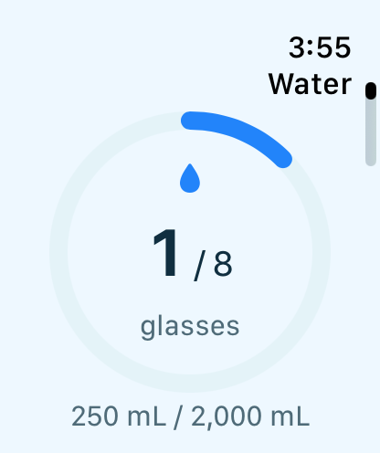

A BRIGHTER YOU, EVERY DAY
Water
Small sips. A brighter you.
Hydration
at your pace.
at your pace.
 Log a drinkQuick amounts & custom entries
Log a drinkQuick amounts & custom entries Your goalVolume or glasses
Your goalVolume or glasses Stay in syncApple Watch water companion
Stay in syncApple Watch water companionReal Merthyra Day screen · Example data · Tap to enlarge
SMALL SIPS, REAL PROGRESSOne view of your water.
One view of your water.
Everywhere you look.
Home, Wellness, and the expanded water tracker use the same progress ring. Each drink updates your total and progress toward your optional daily goal.
- Volume or glassesChoose glasses, mL, or fl oz. Set the glass size you use.
- A goal that’s yoursSet a personal goal or log drinks without one.
- Keep your own recordReview your entries, edit an amount, or delete a log.
- A little encouragementOptional reminders, weekly totals, and your logging streak.
A SMALL SIP, ON YOUR WRISTWater, wherever
Water, wherever
your day takes you.
The Apple Watch companion lets you log water, see your progress ring, and scroll your entries with a swipe or the Digital Crown.
Watch entries save locally and sync with your paired iPhone when connected. Water logs are kept by Merthyra Day; they aren’t written to Apple Health.

Big little wins.
A little clarity. A brighter day.
Meet the wellness and productivity app built around your day.
Explore the app Small steps. Brighter days.